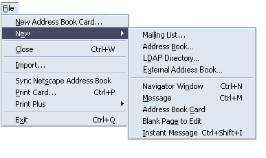
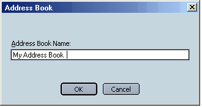
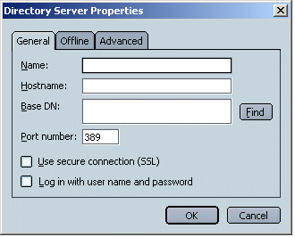
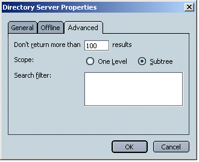
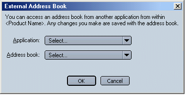
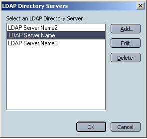

|
MachV/Mozilla: Mail |
UI Specification
|
|
New AB/LDAP Directory |
Last
Modification:
|
|
Author: Jennifer Glick |
Status: Draft |
||||||||||
|
Quicklinks: |
Feature Team:
Please post all comments and suggestions regarding this spec to the newsgroup, netscape.public.mozilla.mail-news. |
New personal Address Books, Mailing Lists, and External Address Books (Outlook and Outlook Express) can be added from the Address Book window.
New LDAP Directories can be added from both the Address Book window and the Preferences: Addressing panel. This design assumes that if the user adds a new LDAP directory in one location, it should automatically also be available in the second location. For example, if the user adds an LDAP directory to the Address Book window, the LDAP directory should also be available in the "Directory Server" menu in Preferences: Addressing. Conversely, if a user adds a new LDAP server using the Preferences "LDAP Directory Servers" dialog, the LDAP server should also appear in the Address Book window.
If a new or external address book is added to the Address Book window, the AB should be included in autocomplete if the "Local Address Books" setting is checked in Preferences: Addressing.
Address Book window, File menu.

Each New menu item would open an appropriate different dialog for adding a new Address Book, Mailing List, LDAP Directory or External Address Book to the Address Book window.

 

Addressing: Address Autocompletion panel. Any LDAP directories the user has configured, either from the Preferences window, or from the Address Book window, should appear in the Directory Server menu and the "LDAP Directory Server" dialog (see below).
Selecting "Edit Directories...", opens the "LDAP Directory Servers" dialog. This dialog is used to add, edit or delete LDAP directories. Any changes made using this dialog should be reflected in the "Directory Server" menu above as well as the available LDAP directories displayed in the Address Book window.
